NAZAS
National Association of Zazzau Students
This is the official digital home of the National Association of Zazzau Students. We preserve our history, honor leadership, and promote unity among students.
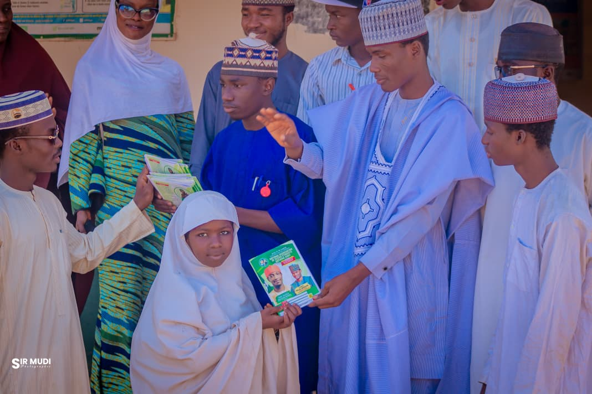
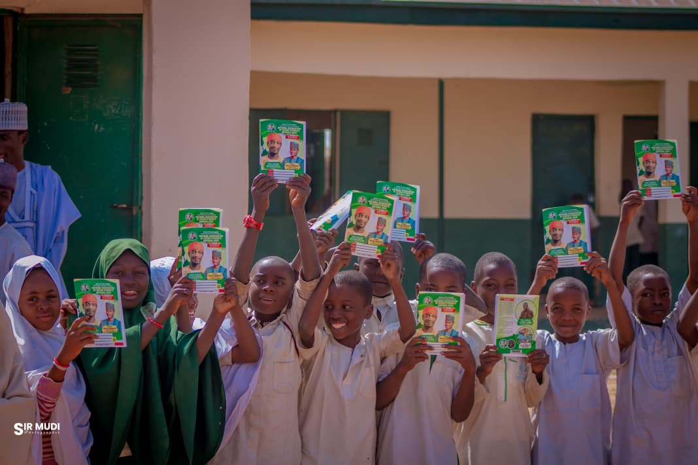
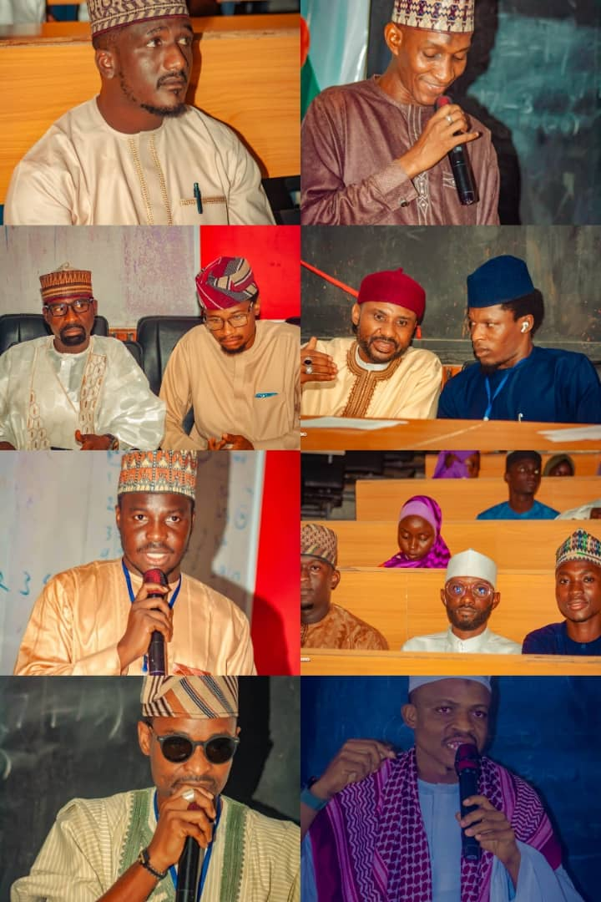

The National Association of Zazzau Students (NAZAS) is the central student body representing Zazzau students across higher institutions. The association stands as a symbol of unity, leadership, and progress.
Student Members
Local Chapters
Years of Legacy
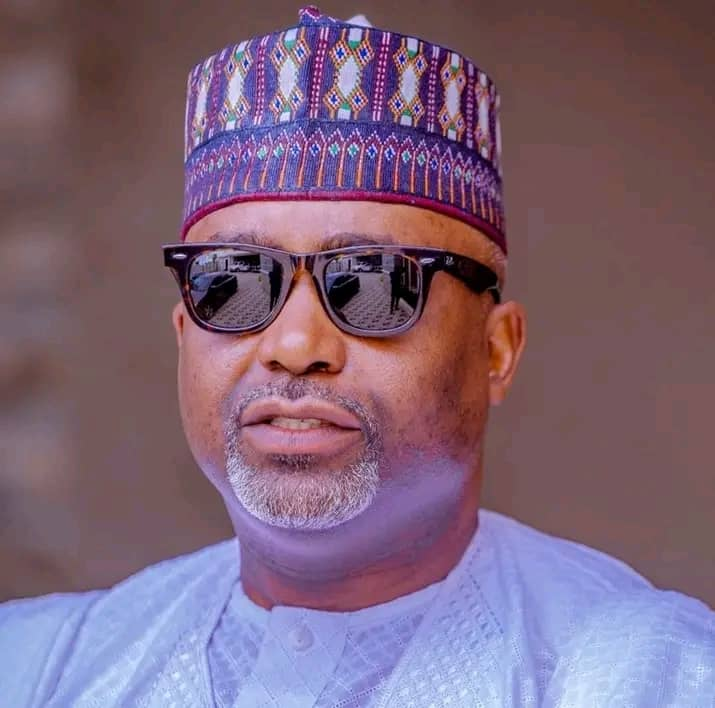
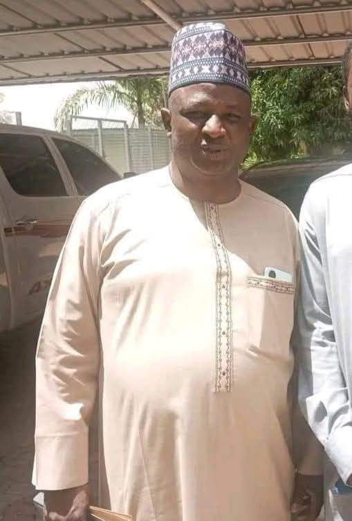

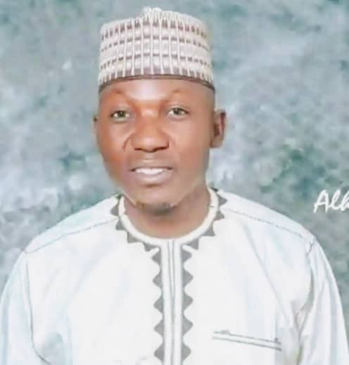
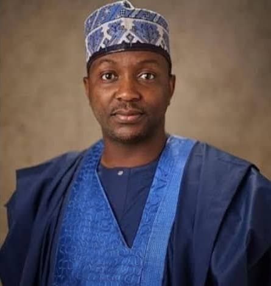
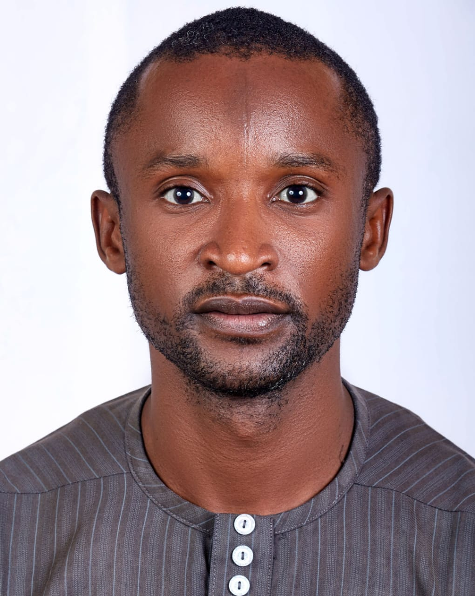
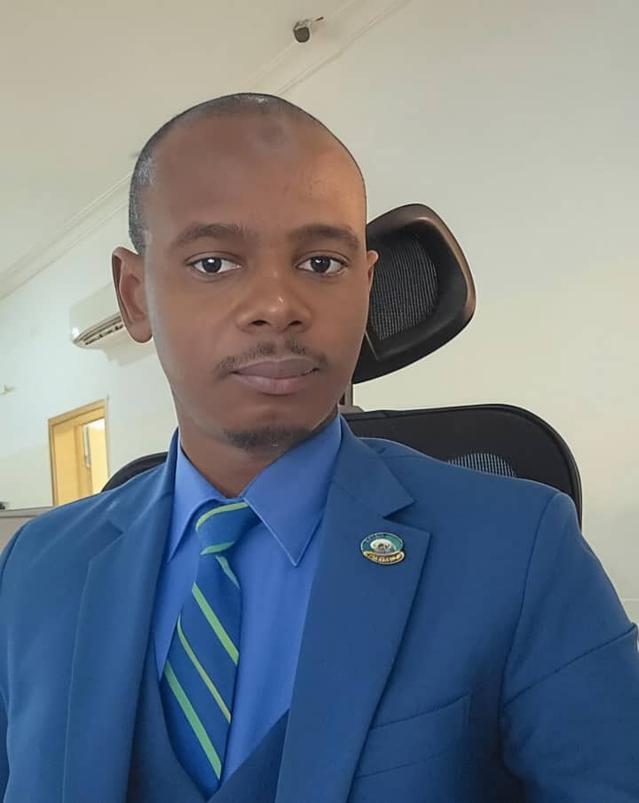


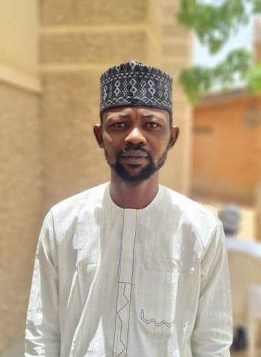
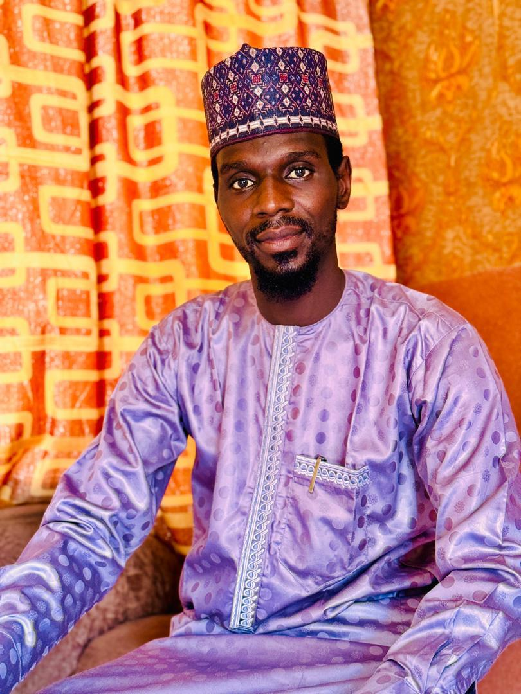
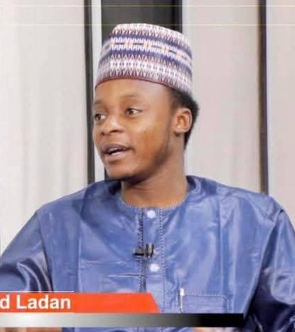
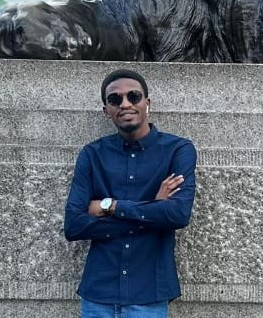
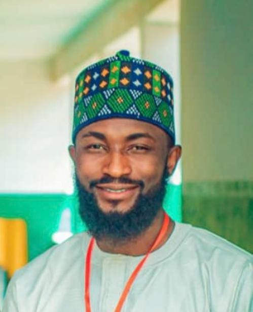
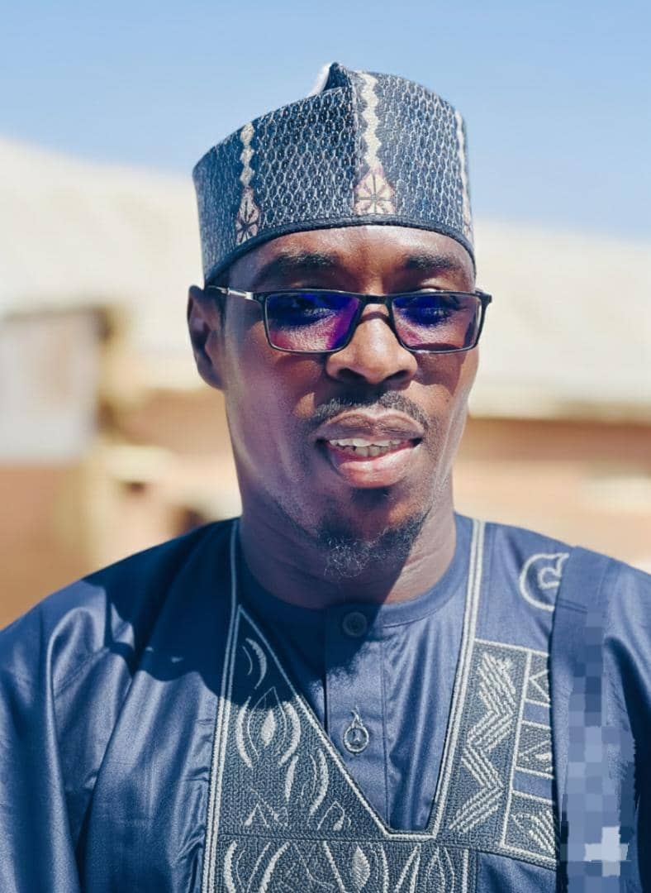
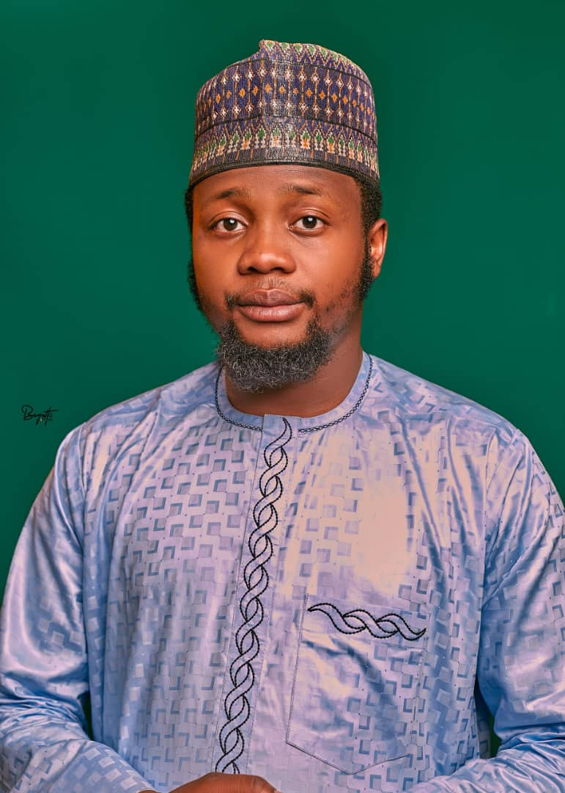
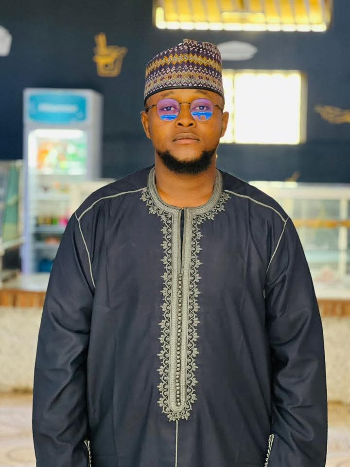

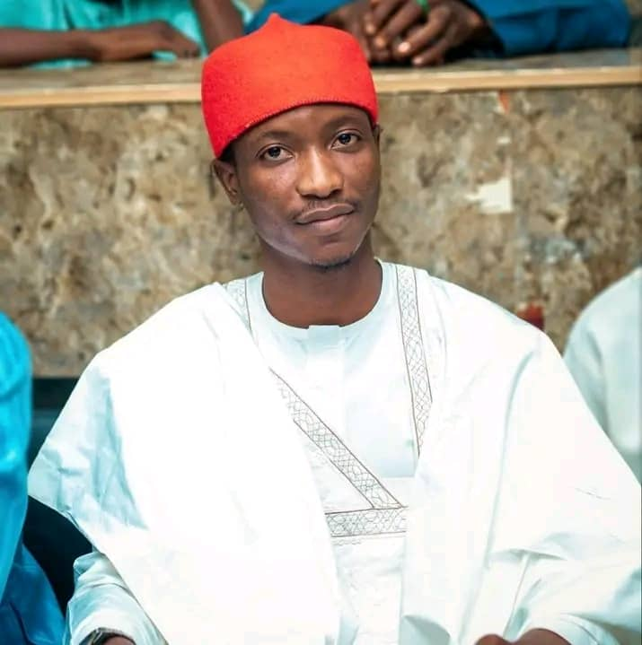
Biography details...